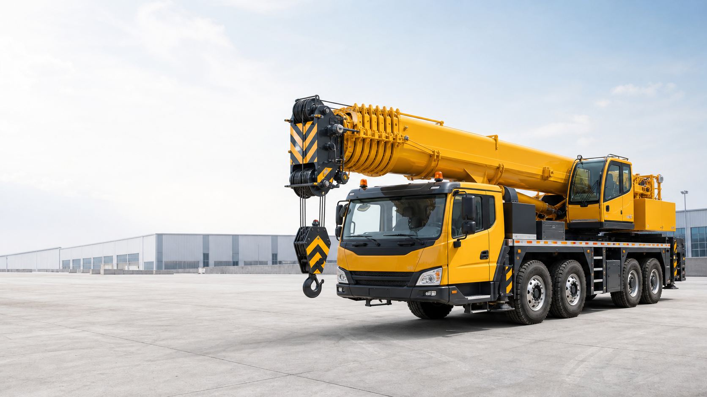

Location grue mobile avec opérateur
Grue mobile pour travaux de levage, pose de structures, manutention de conteneurs, machines et matériaux lourds. Voir location grue mobile Agadir.

Location grue mobile et matériel BTP
Ste Hsaina Construction accompagne les chantiers, entreprises et particuliers pour le levage, la manutention et la location de matériel de construction, avec réponse rapide par téléphone ou WhatsApp.
Services
Une offre claire pour les besoins de chantier : levage, manutention, terrassement léger selon disponibilité, et accompagnement sur site.
Grue mobile pour travaux de levage, pose de structures, manutention de conteneurs, machines et matériaux lourds. Voir location grue mobile Agadir.
Intervention sur chantiers de bâtiment, génie civil, lots techniques, charpentes, équipements et installations industrielles.
Matériel de construction et engins de chantier pour compléter vos besoins de levage, manutention et préparation de site. Voir matériel construction Agadir.
Grues de chantier pour besoins de levage, pose de matériaux, assistance BTP et organisation selon accès, charge et durée.
Solutions de matériel chantier type Manitou et télescopique JCB pour chargement, déplacement, préparation de site et appui aux travaux.
Chargement, déchargement et déplacement de conteneurs, machines, modules préfabriqués et charges volumineuses. Voir matériel chantier Maroc.
Pourquoi nous choisir
Poids, portée, accès, sol et date sont vérifiés pour proposer la bonne machine.
Un contact simple par téléphone ou WhatsApp pour avancer vite sur les demandes urgentes.
BTP, industrie, logistique, conteneurs, machines et charges volumineuses.
Agadir, Souss-Massa et interventions organisées dans les principales villes du Maroc.
Nos Machines
Retrouvez les tonnages les plus demandés pour orienter votre demande de location. La disponibilité et la capacité exacte sont confirmées au devis selon le chantier, l'accès et la charge.

Chantiers urbains, accès limités et levages courants.
Usage principal : accès réduit WhatsApp devis
Bâtiment, équipements techniques et chargement rapide.
Usage principal : chantier BTP WhatsApp devis
Structures, charpentes, conteneurs et modules lourds.
Usage principal : portée moyenne WhatsApp devis
Montage technique et pièces volumineuses.
Usage principal : stabilité WhatsApp devis
Charges lourdes et grands éléments de chantier.
Usage principal : levage lourd WhatsApp devis
Industrie, machines lourdes et installations techniques.
Usage principal : industrie WhatsApp devis
Grands projets, modules lourds et longue portée.
Usage principal : grands projets WhatsApp devis
Sites industriels, énergie et manutention exceptionnelle.
Usage principal : levage exceptionnel WhatsApp devis
Levage BTP, matériaux, coffrage, charpente et assistance aux équipes de chantier.
Usage principal : BTP WhatsApp devis
Manutention, chargement, déplacement de matériaux et appui aux chantiers avec accès préparé.
Usage principal : manutention WhatsApp devis
Appui chantier, préparation de site, chargement et travaux selon disponibilité du matériel.
Usage principal : chantier WhatsApp devisLes tonnages sont indicatifs : Ste Hsaina Construction confirme la machine adaptée après étude du poids, de la portée, du sol, de l'accès et de la disponibilité.
Secteurs
Ces usages couvrent les demandes les plus fréquentes pour savoir rapidement si une grue mobile ou un matériel de construction peut répondre au chantier.
Levage de matériaux, charpentes, éléments préfabriqués et équipements techniques sur chantier.
Manutention de groupes, machines, structures et charges nécessitant précision et préparation.
Chargement, déchargement et repositionnement de charges lourdes ou volumineuses.
Zones d'intervention
Ste Hsaina Construction répond aux besoins de levage à Agadir, dans le Souss-Massa et dans les grandes villes marocaines selon disponibilité.
FAQ
Ces réponses aident les clients à préparer une demande précise avant une intervention de levage ou de manutention au Maroc.
Oui, Ste Hsaina Construction intervient à Agadir et dans les zones proches comme Inezgane, Ait Melloul, Taroudant et Tiznit.
Oui, les interventions peuvent être organisées dans plusieurs villes du Maroc selon le type de chantier, la distance et la disponibilité du matériel.
Cette recherche correspond généralement à location grue mobile. Ste Hsaina Construction propose ce service à Agadir, dans le Souss-Massa et partout au Maroc selon disponibilité.
Oui, les demandes de matériel chantier, matériel de construction, levage et manutention peuvent être étudiées selon la ville, l'accès et le besoin.
Appelez le 06 64 31 90 35 ou envoyez les détails du chantier par WhatsApp : ville, charge, hauteur, accès et date souhaitée.
Contact
Remplissez le brief rapide : il prépare un message WhatsApp avec les informations utiles. Vous pourrez ajouter les photos du chantier avant l'envoi.